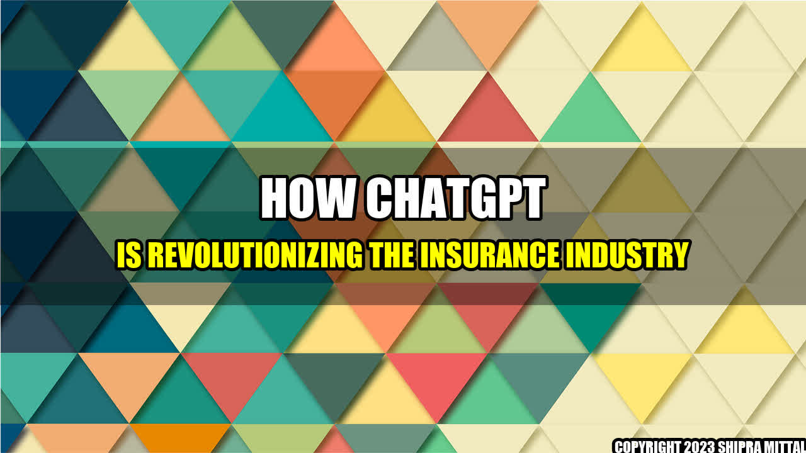

How ChatGPT is Revolutionizing the Insurance Industry

Once upon a time, I was involved in a car accident. As you can imagine, it was a stressful and frustrating moment. Dealing with the aftermath, including the insurance claims, only added to the trouble. That's when I realized that there had to be a better way for the insurance industry to handle these situations. That's where ChatGPT comes into play.
4 Concrete Examples of How ChatGPT Can Help the Insurance Industry
Instant Customer Support: A ChatGPT powered chatbot can instantly respond to customer inquiries and answer common questions, thereby reducing the need for human intervention. This can save time and effort for both the insurer and the customer.
Faster Claims Processing: ChatGPT can be trained to process claims faster and more accurately than humans. By relying on AI to perform repetitive tasks and extract information from customers, insurance agents can focus on more complex tasks and improve overall efficiency.
Improved Fraud Detection: ChatGPT can analyze vast amounts of data and identify suspicious patterns that may indicate fraudulent activities. This can help insurance providers to take proactive measures and reduce the risk of losses due to fraudulent claims.
Personalized Recommendations: ChatGPT can leverage customer data and offer personalized recommendations for insurance coverage based on their needs and preferences. This can help insurers to improve customer retention and increase revenue.
Conclusion: How ChatGPT Can Bolster the Insurance Industry
Enhanced Efficiency: By streamlining customer support and claims processing, ChatGPT can help insurers to save time, reduce costs, and enhance overall efficiency.
Better Customer Experience: ChatGPT can provide instant support and personalized recommendations, thereby improving customer satisfaction and retention.
Reduced Risk: ChatGPT can identify fraudulent activities and take proactive measures to mitigate risk and prevent losses.
As the insurance industry continues to evolve, it's clear that ChatGPT technology will play an increasingly important role. By embracing innovation and leveraging advanced AI capabilities, insurers can stay ahead of the curve and provide better services to their customers.
Akash Mittal Tech Article
Share on Twitter Share on LinkedIn